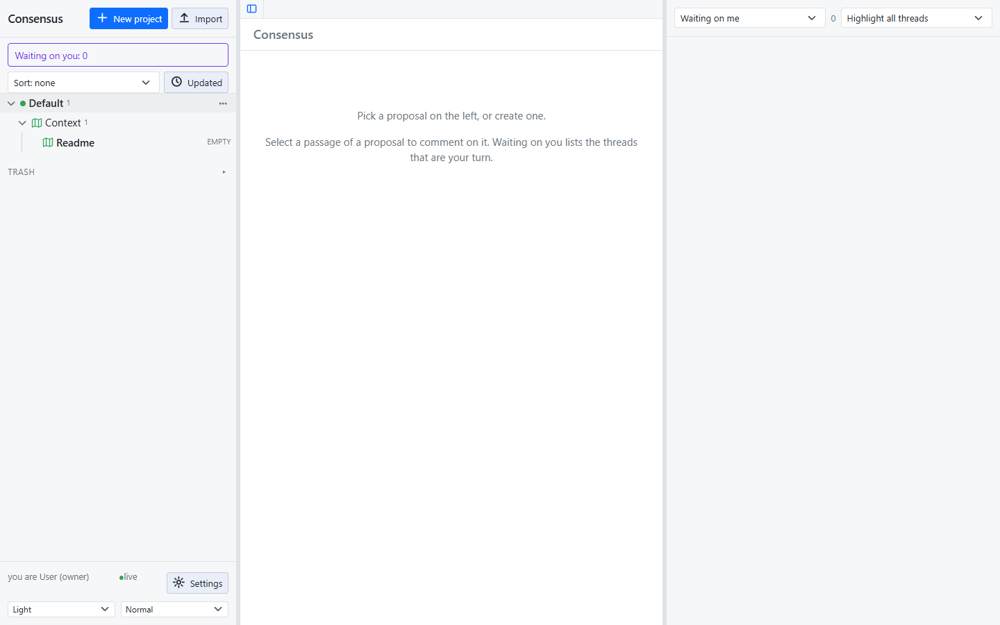
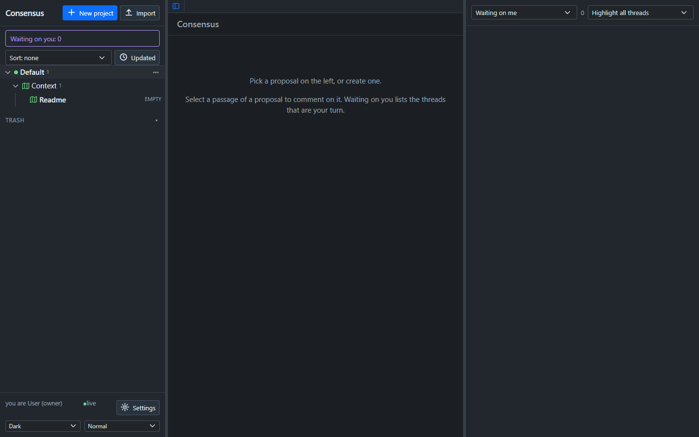

Consensus-AI
Consensus-AIGetting started
Consensus-AI is a web application you run yourself. It keeps your plans as plain files in a folder, shows them in a browser, and lets an LLM take part through its API. This page gets it running in the three ways there are: from the checkout, in Docker, and as the desktop application.
The code is public at github.com/mchiver/consensus-ai. An installer is coming; until then, every way starts from the checkout.
From the checkout
You need Node 22 or later and git.
git clone https://github.com/mchiver/consensus-ai.git
cd consensus-ai
npm install
node bin/consensus.js
The server prints its address, its data folder and its settings file:
Consensus at http://127.0.0.1:3500/ (listening on 127.0.0.1)
data folder W:\consensus-ai\~data
settings written to W:\consensus-ai\~data\consensus.json
Open http://127.0.0.1:3500/ in a browser. You are the owner, and you see the Default project with its Context folder and an empty Readme.


Three options change where and how it runs:
| Option | What it does |
|---|---|
--data <folder> |
the data folder; ~data/ beside the checkout by default |
--port <port> |
the port; 3500 by default |
--host <address> |
the address to listen on; 127.0.0.1 by default, 0.0.0.0 for every interface |
Listening beyond your own machine is a decision: anyone who can reach the server acts as the owner. Keep it on 127.0.0.1 unless the network is yours.
In Docker
The repository holds a Dockerfile and a compose.yaml. From the checkout:
docker build -t consensus:latest .
docker compose up -d
The server listens on port 3500 and keeps its data in the consensus-data volume. docker compose down stops it; the volume stays. The compose.yaml as shipped publishes the port on every IPv4 address of the host, because it is written for a server on a private network; edit it for your own.
The desktop
Consensus Desktop is the same page in a window of its own, able to connect to any Consensus server and to run one locally. From the checkout:
npm run desktop
It opens on the connect screen.


- Servers lists the servers you saved. Add server asks for a name and a URL, tries the address before saving it, and says which Consensus version answers.
- Local server runs Consensus inside the app over a data folder you pick with Browse. Start it, then Connect. Closing the window stops it.
Once connected, the window shows the page, and the Server menu has Connect to another, Reload, the local server's Start and Stop, and New window for a second server. The desktop also brings LLM connections and workspaces of its own; the page Working with an LLM covers them.
What to do first
- Open the Readme in the Context folder and write a few lines about what the project is for. Every LLM that works on the project reads it.
- Make a plan with New plan in the project's menu, and write a draft.
- Select a sentence of the draft and comment on it. That is a thread, and the rest of this guide is about what happens next.